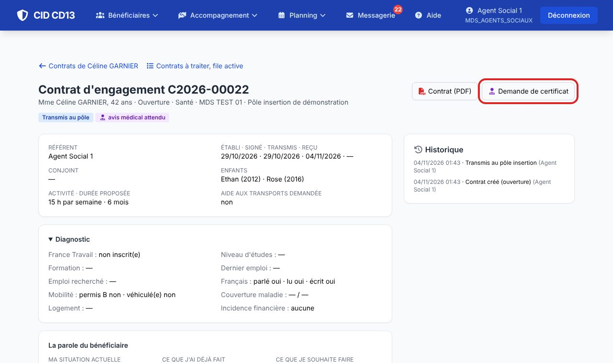
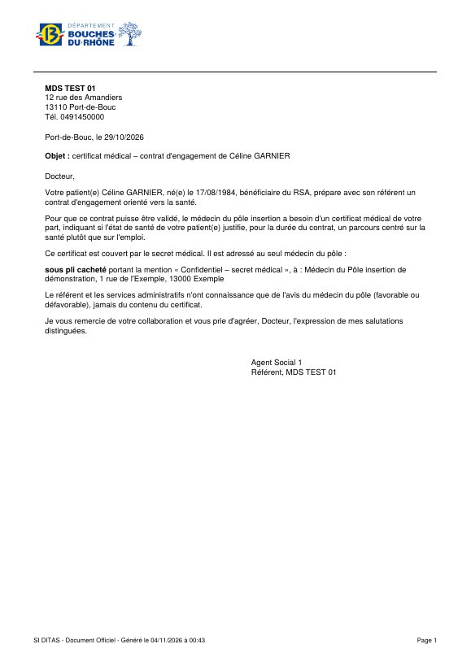
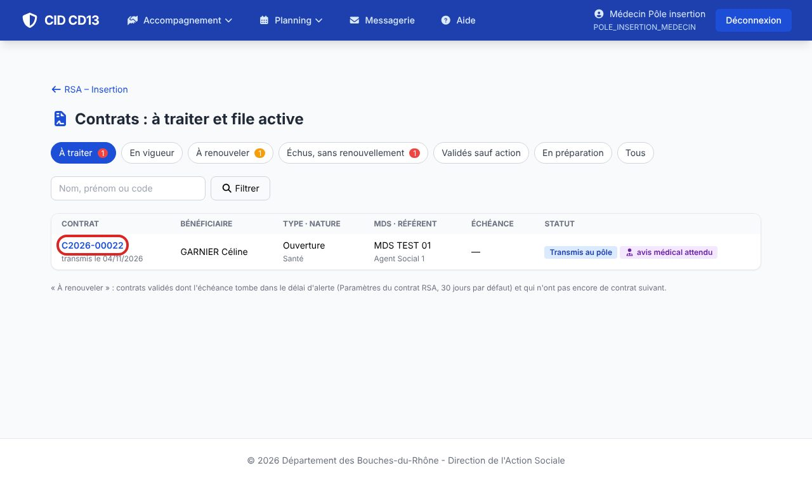
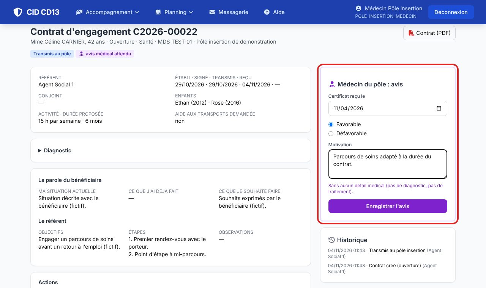
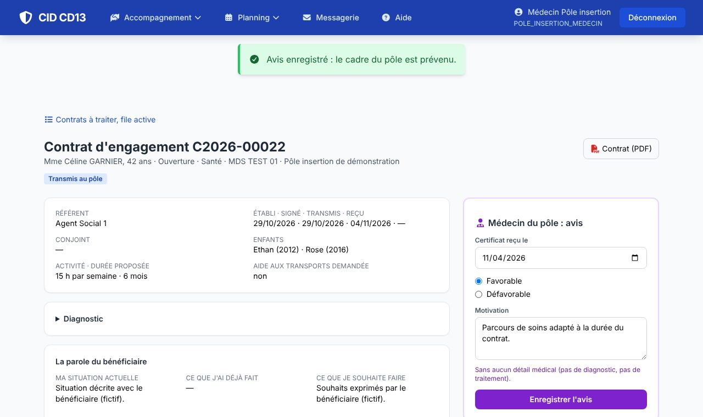

1Demander le certificat (référent)


- Dans le contrat, choisissez la nature Santé et le mode de transmission du certificat : sous pli cacheté ou par MSSanté (si le pôle a une adresse MSSanté).
- Imprimez la Demande de certificat et remettez-la au bénéficiaire pour son médecin traitant.
- Sans mode de transmission, le contrat ne peut pas partir au pôle.
2Donner l'avis (médecin du pôle)


- Les contrats santé en attente d'avis sont dans l'onglet À traiter.
- Indiquez la date de réception du certificat, l'avis favorable ou défavorable et, s'il est défavorable, sa motivation.
- Aucun détail médical dans la motivation : ni diagnostic, ni traitement. Le certificat reste chez vous.
3Suite

- Le cadre du pôle est prévenu : la commission peut statuer. Le référent voit l'avis et sa motivation.
Bon à savoir
- L'âge limite (60 ans) et l'adresse MSSanté du médecin du pôle se règlent en administration.
- À partir de 60 ans, le certificat est facultatif.
Et ensuite ?
Cliquez sur une image pour l'agrandir. Le cadre rouge montre où cliquer ou quoi remplir. Toutes les données affichées sont fictives.